토목산업기사 (2005-03-06 기출문제)
1과목: 응용역학
1. 축 방향력만을 받는 부재로 된 구조물은?
- 단순보
- 연속보
- 트러스
- 라아멘
(정답률: 알수없음)

2. 다음 그림에서 A점의 휨모멘트는 얼마인가?
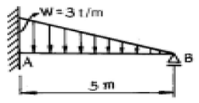
- -9.375 t·m
- -4.688 t·m
- -5.000 t·m
- -5.765 t·m
(정답률: 알수없음)
3. 다음 그림과 같은 캔틸레버의 경우 저장되는 탄성에너지를 구하면? (단, 전단탄성에너지는 무시한다.)
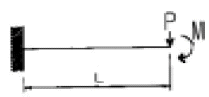
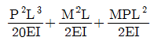
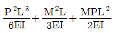
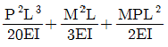
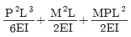
(정답률: 알수없음)
4. 단면의 주축에 대한 설명 중 틀린 것은?
- 단면의 도심을 지나는 모든 축 가운데 단면 2차 모멘트가 최대,최소인 축을 단면의 주축이라고 한다.
- 최대 주축과 최소 주축은 직교한다.
- 두 주축에 관한 단면 상승 모멘트는 0 이다.
- 대칭 축은 주축이다. 따라서 모든 주축 역시 대칭 축이다.
(정답률: 알수없음)
5. 그림과 같은 빗금친 부분의 y축 도심은 얼마인가?
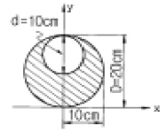
- x축에서 위로 5.43㎝
- x축에서 위로 8.33㎝
- x축에서 위로 10.26㎝
- x축에서 위로 11.67㎝
(정답률: 알수없음)
6. 지름 32cm 의 원형단면보에 3.14t 의 전단력이 작용할 때 최대 전단응력은?
- 6.0 kg/cm2
- 5.21 kg/cm2
- 12.2 kg/cm2
- 21.8 kg/cm2
(정답률: 알수없음)
7. 길이 10m 의 강(鋼)이 15℃ 에서 40℃ 로 온도상승할 때 이것이 양단 고정되었을 경우의 응력은? (단, E = 2.1 × 106㎏/㎝2, 선팽창계수α = 0.00001/℃)
- 475 ㎏/㎝2
- 500 ㎏/㎝2
- 525 ㎏/㎝2
- 538 ㎏/㎝2
(정답률: 알수없음)
8. 지름이 1cm, 길이가 1m 인 원형의 강재단면에 1000kg 의 하중이 작용하였다. 자중을 무시할 때 늘어난 길이는? (단, 탄성계수는 2.0 x 106kg/cm2 임)
- 0.479 mm
- 0.637 mm
- 0.699 mm
- 0.591 mm
(정답률: 알수없음)
9. 그림과 같이 단순보에서 B점에 모멘트 하중이 작용할 때 A점과 B점의 처짐각의 비(θA: θB)는?
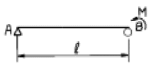
- 1:2
- 2:1
- 1:3
- 3:1
(정답률: 알수없음)
10. 다음 보에서 B 점의 수직반력은 얼마인가?
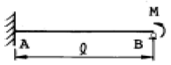
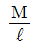
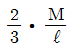
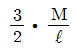
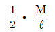
(정답률: 알수없음)
11. 그림과 같은 트러스에 있어서 a 부재에 일어나는 부재내력은?
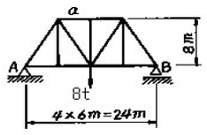
- - 6 tonf
- - 5 tonf
- - 4 tonf
- - 3 tonf
(정답률: 알수없음)
12. 그림과 같은 구조물에서 D단의 휨 모멘트 MD의 크기는 몇 t·m인가?
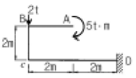
- 3
- 5
- 8
- 13
(정답률: 알수없음)
13. 다음 힘의 0점에 대한 모멘트 값은?
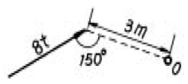
- 24 t·m
- 8 t·m
- 6 t·m
- 12 t·m
(정답률: 알수없음)
14. 그림과 같은 라아멘에서 C점의 휨모멘트는?
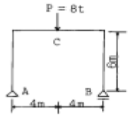
- 12 t·m
- 16 t·m
- 24 t·m
- 32 t·m
(정답률: 알수없음)
15. 그림과 같이 양단 고정인 기둥의 좌굴응력을 오일러(Euler)의 공식에 의하여 계산한 값은? (단, 기둥단면은 그림과 같으며 E = 4.0×105kg/cm2)
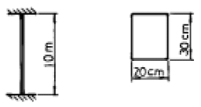
- 635 kg/cm2
- 458 kg/cm2
- 783 kg/cm2
- 526 kg/cm2
(정답률: 알수없음)
16. 다음 부정정 구조물의 부정정 차수를 구한 값은?
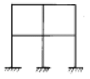
- 8
- 12
- 16
- 20
(정답률: 알수없음)
17. 그림과 같은 평형을 이루는 세힘에 관하여 다음 설명중 옳은 것은?
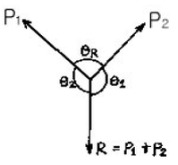
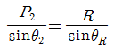
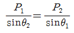
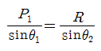
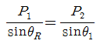
(정답률: 알수없음)
18. 길이 ℓ인 단순보에 등분포 하중( w )이 만재되었을 때 최대 처짐각은 얼마인가? (단, EI는 일정)
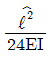
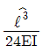
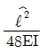
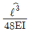
(정답률: 알수없음)
19. 그림과 같은 빗금친 단면의 x축에 대한 회전 반경(회전반지름) 값이 옳은 것은?
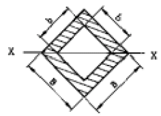
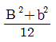
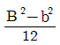
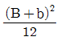
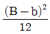
(정답률: 알수없음)
20. 그림과 같은 단순보에서 최대 휨모멘트가 발생하는 위치는? (단, A점으로부터의 거리 X로 나타낸다.)
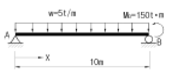
- 6m
- 7m
- 8m
- 9m
(정답률: 알수없음)
2과목: 측량학
21. 다음은 등고선에 관한 설명이다. 틀린 내용은?
- 간곡선은 계곡선 보다 가는 직선으로 나타낸다.
- 주곡선 간격이 10m이면 간곡선 간격은 5m 이다.
- 계곡선은 주곡선 보다 굵은 실선으로 나타낸다.
- 계곡선은 주곡선 간격의 5배마다 굵은 실선으로 나타낸다.
(정답률: 알수없음)
22. 트래버스 측량에서 거리의 총합이 1500m, 위거의 오차 -0.15m, 경거의 오차 0.25m일 때 폐합오차는?
- 0.25m
- 0.27m
- 0.29m
- 0.31m
(정답률: 알수없음)
23. 다음 그림은 삼각측량 결과이다. BC의 방위각을 구한 값으로 옳은 것은?
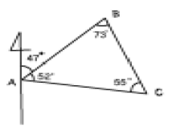
- 154°
- 137°
- 128°
- 121°
(정답률: 알수없음)
24. 두변의 길이를 1/2000 정밀도로 관측하여 직사각형의 면적을 산출할 경우 산출된 면적의 정밀도는?
- 1/1000
- 1/2000
- 1/3000
- 1/4000
(정답률: 알수없음)
25. 촬영고도 3000m인 비행기에서 초점거리 151mm인 카메라로 촬영한 수직항공사진에서 길이가 50m인 교량이 사진상에 나타나는 길이는?
- 1.0mm
- 1.5mm
- 2.0mm
- 2.5mm
(정답률: 알수없음)
26. 원격탐측(Romote sensing)의 정의로 가장 올바른 것은?
- 지상에서 대상물체의 전파를 발생시켜 그 반사파를 이용하여 관측하는 것
- 센서를 이용하여 지표의 대상물에서 반사 또는 방사된 전자스펙트럼을 관측하고 이들의 자료를 이용하여 대상물이나 현상에 관한 정보를 얻는 기법
- 물체의 고유스펙트럼을 이용하여 각각의 구성성분을 지상의 레이더망으로 수집하여 처리하는 방법
- 우주선에서 찍은 중복사진을 이용하여 항공사진의 처리와 같은 방법으로 판독하는 작업
(정답률: 알수없음)
27. A, B, C 3명이 동일조건에서 어떤 거리를 측정하여 다음의 결과를 얻었다면 최확값은 얼마인가? (100.521m±0.030m, 100.526m±0.015m, 100.532m±0.045m)
- 100.521m
- 100.526m
- 100.531m
- 100.533m
(정답률: 알수없음)
28. 항공사진의 축척이 1/40,000이고 C-factor가 600인 도화기로 도화작업을 할 때 등고선의 최소간격은? (단, 사진 초점거리는 150mm 임.)
- 5m
- 10m
- 15m
- 20m
(정답률: 알수없음)
29. 다음 완화곡선에 대한 설명 중 잘못된 것은?
- 완화곡선의 곡선반경은 시점에서 무한대이다.
- 완화곡선의 접선은 시점에서 직선에 접한다.
- 완화곡선의 종점에 있는 캔트(cant)는 원곡선의 캔트(cant)와 같다.
- 완화곡선의 길이는 도로폭에 따라 결정된다.
(정답률: 알수없음)
30. 수준측량시 레벨의 기계고가 1.2m이고 지반고가 50.345m일 때 등고선 림50.000m, 립47.000m를 측정하려 할 때의 표척의 읽음값은 각각 얼마인가?
- 림1.545m, 립4.545m
- 림1.745m, 립4.745m
- 림1.245m, 립4.245m
- 림1.345m, 립4.345m
(정답률: 알수없음)
31. 노선측량에서 곡선을 분류한 것으로 틀린 것은?
- 곡선은 크게 평면곡선과 수직곡선으로 나눌 수 있다.
- 머리핀 곡선은 평면곡선 중 원곡선에 속한다.
- 3차 포물선은 평면곡선 중 완화곡선에 속한다.
- 렘니스케이트는 수직곡선 중 종단곡선에 속한다.
(정답률: 알수없음)
32. 하천의 수위관측소의 설치장소로 적당하지 않은 것은?
- 하상과 하안이 안전한 곳
- 홍수시에도 양수량을 쉽게 알아볼 수 있는 곳
- 수위가 구조물의 영향을 받지 않는 곳
- 수위의 변화가 크게 발생하여 그 변화가 명확한 곳
(정답률: 알수없음)
33. 도면에서 1-2측선의 방위각이 95°25'30" 이고 측정값이 그림과 같을 때 3-4 측선의 방위각은?
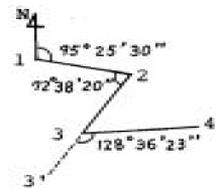
- 254°10′47″
- 84°10′47″
- 244°10′47″
- 74°10′47″
(정답률: 알수없음)
34. 교점(I.P.)의 위치가 기점으로부터 추가거리 325.18m이고, 곡선반경(R) 200m, 교각(I) 41°00′인 단곡선을 편각법으로 측설하고자 한다. 곡선시점(B.C.)의 위치는? (단, 중심말뚝 간격은 20m이다.)
- No.3 + 14.777m
- No.7 + 0.116m
- No.12 + 10.403m
- No.19 + 13.520m
(정답률: 알수없음)
35. 다음 중 물리학적 측지학에 속하는 것은?
- 수평위치 결정
- 중력측정
- 천문측량
- 길이 및 시의 결정
(정답률: 알수없음)
36. 그림과 같이 교호수준측량을 실시하여 a1=0.74m, a2=1.87m b1=0.07m, b2=1.24m의 결과를 얻었다. 두 지점의 표고차는?
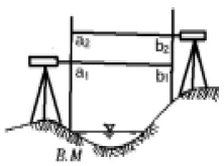
- 0.50m
- 0.63m
- 0.65m
- 0.67m
(정답률: 알수없음)
37. 삼각점 A에 기계를 세우고 삼각점 B가 보이지 않아 P를 보고 관측하여 T'=65°42′39″를 읽었다면 T=∠DAB는 얼마인가? (단, S=2km, e=40cm, ø=256°40′)
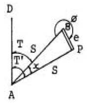
- 65°39′58″
- 65°40′20″
- 65°41′59″
- 65°42′20″
(정답률: 알수없음)
38. 편각법에 의하여 원곡선을 설치하고자 한다. 곡선반경이 500m, 시단현이 12.3m일 때 편각은?
- 36′27″
- 39′42″
- 42′17″
- 43′43″
(정답률: 알수없음)
39. 화면의 크기 18cm×18cm, 초점거리 25cm, 촬영고도 5480m일 때 이 화면의 포괄면적은?
- 45.6km2
- 35.6km2
- 25.6km2
- 15.6km2
(정답률: 알수없음)
40. △ABC의 면적을 그림과 같이 4:5로 분할하려고 한다. 분할점은 A로부터 얼마거리로 해야 하는가?
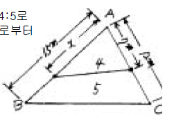
- 10.8m
- 11.4m
- 12.0m
- 12.6m
(정답률: 알수없음)
3과목: 수리학
41. 비중이 1.025인 해수의 수심 2000m의 해저에 있어서의 정수압은?
- 1025t/m2
- 1750t/m2
- 2⑤0t/m2
- 1250t/m2
(정답률: 알수없음)
42. 다음중 홍수 유출에서 D.A.D해석에 포함되지 않는 항은?
- 유역면적
- 강우량
- 침투량
- 강우 지속 기간
(정답률: 알수없음)
43. 위어(weir)의 근본적인 사용 목적과 거리가 가장 먼 것은?
- 유량 측정
- 수위 조절
- 하천 보호
- 수질 오염 방지
(정답률: 알수없음)
44. 베르누이(Bernoulli)의 정리로 불리우는 방정식을 구성하는 항으로 위치수두, 압력수두 외에 또 하나의 수두항은?
- 총 수두
- 유속수두
- 유효수두
- 손실수두
(정답률: 알수없음)
45. 유량Q=0.08m3/sec이고 관의 단면적 A=250cm2으로 일정할 때 물이 그림과 같이 90°굽은 관을 따라 흐른다면 이 벽면이 받는 힘P는?
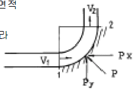
- 32.8kg
- 36.8kg
- 42.4kg
- 48.4kg
(정답률: 알수없음)
46. 다음 중 깊은 우물(심정호)을 옳게 설명한 것은?
- 집수 깊이가 100m 이상인 우물
- 집수 우물 바닥이 불투수층까지 도달한 우물
- 집수 우물 바닥이 불투수층을 통과하여 새로운 대수층에 도달한 우물
- 불투수층에서 50m이상 도달한 우물
(정답률: 알수없음)
47. 다음 중 수두측정 오차가 유량에 미치는 영향이 가장 큰 위어는?
- 3각형 위어
- 사다리꼴 위어
- 4각형 위어
- 형태와는 무관
(정답률: 알수없음)
48. 개수로의 흐름을 상류(常流)와 사류(射流)로 구분할 때 기준으로 사용할 수 없는 것은?
- 후루드 수(Froude number)
- 한계유속(critical velocity)
- 한계수심(critical depth)
- 레이놀즈 수(Reynolds number)
(정답률: 알수없음)
49. 직경 80㎝의 관수로에 물이 가득차서 흐를 때의 경심(동수반경)은?
- 20㎝
- 40㎝
- 60㎝
- 80㎝
(정답률: 알수없음)
50. 2m×2m×2m인 고가수조에 관로를 통해 유입되는 물의 유입량이 0.15ℓ/sec 일 때 만수가 되기까지 걸리는 시간은? (단, 현재 고가수조의 수심은 0.5m이다.)
- 5시간 20분
- 8시간 22분
- 10시간 5분
- 11시간 7분
(정답률: 알수없음)
51. 힘의 차원을 MLT계로 표시한 것은?
- [ML-1T-2]
- [MLT-1]
- [ML-2T2]
- [MLT-2]
(정답률: 알수없음)
52. 수면차가 10m인 두 저수지를 직경 30cm, 길이 300m, 마찰손실계수 0.03인 주철관으로 연결하여 송수할 때, 관을 흐르는 유량(Q)은? (단, 관의 유입 및 유출, 마찰손실만 존재한다.)
- Q = 0.197m3/sec
- Q = 0.176m3/sec
- Q = 0.035m3/sec
- Q = 0.0177m3/sec
(정답률: 알수없음)
53. 점성유체(粘性流體)의 설명으로 가장 옳은 것은?
- 이상유체(理想流體)를 말한다.
- 흘러갈 때 마찰이 존재한다.
- 유동시(流動時) 마찰전단응력이 존재치 않는다.
- 압축성 유체를 말한다.
(정답률: 알수없음)
54. 재현기간 10년의 강우강도식이 I=6,000/(t+50), 유출계수가 0.30, 유역면적이 1.5㎞2, 우수의 도달시간이 30분이면 합리식에 의한 첨두유출량(Q)은? (단, t의 단위는 [분])
- 3.2m3/sec
- 4.5m3/sec
- 7.8m3/sec
- 9.4m3/sec
(정답률: 알수없음)
55. 증발접시에 의한 증발량과 저수지에서 실제증발량은 큰 차이를 갖는다. 따라서 증발접시 증발량을 저수지 증발량으로 환산해주어야 하는데 이때에 사용되는 환산계수를 무엇이라 하는가?
- 증발비
- 저수지 환산계수
- 증발접시계수
- 증발환산계수
(정답률: 알수없음)
56. 다음 중 부체의 안정을 조사할 때 고려되지 않는 것은?
- 경심
- 수심
- 부심
- 물체중심
(정답률: 알수없음)
57. 그림과 같이 2.5m x 2.0m의 수직판이 수면으로부터 1.5m아래 세워져 있다. 이 판에 작용하는 전수압은?
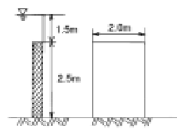
- 16.57t
- 12.00t
- 13.75t
- 15.50t
(정답률: 알수없음)
58. 다음 표에서 Thiessen법으로 유역평균우량을 구한 값은?
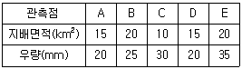
- 25.25mm
- 26.25mm
- 27.25mm
- 0.20mm
(정답률: 알수없음)
59. 수리학적으로 유리한 단면을 옳게 말한 것은?
- 유수 단면적이 일정할 때 윤변과 경심은 상관이 없다.
- 유수 단면적이 일정할 때 윤변과 경심이 최소가 되는 단면이다.
- 유수 단면적이 일정할 때 윤변이 최소이거나 경심이 최대인 단면이다.
- 유수 단면적이 일정할 때 윤변이 최대이거나 경심은 최소인 단면이다.
(정답률: 알수없음)
60. 다음 중 누가우량곡선(Rainfall mass curve)에 대한 설명으로 옳은 것은?
- 누가우량곡선의 경사가 클수록 강우강도가 작다.
- 누가우량곡선의 경사는 지역에 관계없이 일정하다.
- 자기우량기록계에 의한 자기우량기록지는 누가우량곡선의 한 예이다.
- 누가우량곡선으로부터 일정 기간내의 강우량을 산출할 수 없다.
(정답률: 알수없음)
4과목: 철근콘크리트 및 강구조
61. 그림과 같은 1단고정 타단 힌지인 기둥의 유효길이는?
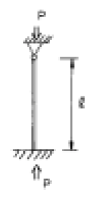
- 2ℓ
- 0.7ℓ
- ℓ
- 0.5ℓ
(정답률: 알수없음)
62. 계수전단력 Vu가 콘크리트가 부담하는 전단강도 φVc의 1/2을 초과하는 모든 철근 콘크리트 휨부재의 최소전단철근 단면적을 계산하는 식으로 옳은 것은? (단, fy는 전단철근의 설계항복강도(MPa), fck는 콘크리트의 설계압축강도(MPa), bw는 보의 폭(mm), S는 전단철근의 간격(mm)이다.)
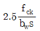
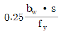
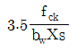
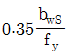
(정답률: 알수없음)
63. 띠철근과 나선철근을 두는 주된 이유는?
- 건조수축에 의한 균열을 방지하기 위해서
- 기둥의 강도를 높이기 위해서
- 하중을 고르게 분포시키기 위해서
- 축철근의 위치를 확보하고 좌굴을 방지하기 위해서
(정답률: 알수없음)
64. 높은 항복 강도를 갖는 고인장 철근을 철근 콘크리트 부재에 사용하여 강도 설계법으로 설계할 때 발생되는 사항을 기록한 다음 내용 중 잘못된 것은?
- 균형 철근비가 커진다.
- 철근의 겹침이음 길이가 늘어난다.
- 사용 철근 단면적이 줄어든다.
- 높은 강도의 콘크리트를 사용하는 것이 좋다.
(정답률: 알수없음)
65. 복철근 직4각형 보의 연성거동을 확보할 수 있는 사용철근비의 제한으로 옳은 것은? (단, ￠b :인장철근만 있을 때의 철근비, ρ'압축철근비이며, 압축철근이 항복하는 경우임)
- 0.75( ￠b + ρ')
- 0.75 ￠b
- 0.75( ￠b - ρ')
- 0.75 ￠b + ρ'
(정답률: 알수없음)
66. 일반적인 전단철근의 설계기준항복강도는 최대 얼마 이하이어야 하는가? (단, 용접 이형철망을 사용하지 않는 경우)
- 400MPa
- 420MPa
- 500MPa
- 520MPa
(정답률: 알수없음)
67. 강도설계시에 콘크리트가 부담하는 공칭전단강도 Vc는 약 얼마인가? (단, fck=24MPa, 부재의 폭 300mm, 부재의 유효깊이 500mm이며 전단과 휨만을 받는 것으로 한다.)
- 100kN
- 110kN
- 118kN
- 122kN
(정답률: 알수없음)
68. 그림과 같은 단순보에서 자중을 포함하여 계수하중이 20kN/m 작용하고 있다. 이 보의 위험단면에서 전단력은 얼마인가?
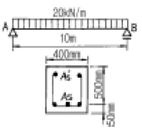
- 100kN
- 90kN
- 80kN
- 70kN
(정답률: 알수없음)
69. 다음 중에서 프리스트레스 감소의 원인으로 거리가 먼 것은?
- 콘크리트의 건조 수축과 크리프
- 콘크리트의 탄성변형
- PS강재의 릴랙세이션
- PS강재의 항복점 강도
(정답률: 알수없음)
70. 철근콘크리트 휨부재의 강도설계시 설계가정에 대한 다음 설명 중 잘못된 것은?
- 힘의 평형조건 및 변형률 적합조건을 모두 만족 시켜야 한다.
- 콘크리트의 압축연단에서 극한변형률은 0.003으로 가정한다.
- 콘크리트의 인장강도는 무시한다.
- 철근의 응력은 철근의 변형률에 관계없이 설계기준 항복강도 (fy)로 하여야 한다.
(정답률: 알수없음)
71. 리벳의 허용강도를 결정하는 방법으로 옳은 것은?
- 전단강도와 압축강도로 각각 결정한다.
- 전단강도와 지압강도 중 큰 것으로 한다.
- 전단강도와 압축강도의 평균치로 결정한다.
- 전단강도와 지압강도 중 작은 것으로 한다.
(정답률: 알수없음)
72. fck = 21MPa, fy = 350MPa로 만들어지는 보에서 인장이형 철근으로 D29(공칭지름 28.6mm)을 사용한다면 기본정착길이는?
- 892mm
- 1⑤4mm
- 1167mm
- 1311mm
(정답률: 알수없음)
73. 강도 설계법의 안전을 위한 규정 중 강도감소계수를 규정하는 요인으로서 부적당한 것은?
- 초과 하중의 영향
- 시공시 작업인부의 미숙련
- 시공 치수의 오차
- 사용 재료 강도의 오차
(정답률: 알수없음)
74. 포스트 텐션방식의 공법이 아닌 것은?
- BBRV공법
- Dywidag공법
- VSL공법
- 롱라인공법
(정답률: 알수없음)
75. 판형에서 복부판에 최대 전단력 S = 800kN이 작용할 때 전단응력은? (단, 복부판의 순단면적 Awn= 9000mm2이고, 총단면적 Awg = 12000mm2이다.)
- 86.9MPa
- 87.9MPa
- 88.9MPa
- 89.9MPa
(정답률: 알수없음)
76. 과소 철근콘크리트보에서 철근이 항복한 후에 계속해서 외부모멘트가 증가할 경우, 중립축의 위치는 어떻게 되는가?
- 압축연단 쪽으로 이동한다.
- 인장연단 쪽으로 이동한다.
- 변화하지 않는다.
- 단면의 도심 쪽으로 이동한다.
(정답률: 알수없음)
77. 철근 콘크리트의 장점 중 틀린 것은?
- 풍화에 대해 내구적이다.
- 진동 및 충격에 저항력이 크다.
- 강구조에 비해 경제적이다.
- 균열이 발생하지 않는다.
(정답률: 알수없음)
78. 4변이 지지되는 슬래브에서 단변 방향의 길이가 1.5m일 때 장변 방향의 길이가 최대 얼마 미만이어야 2방향 슬래브로 보고 설계하는가?
- 1.5 m
- 1.8 m
- 2.25 m
- 3.0 m
(정답률: 알수없음)
79. 그림과 같은 단철근 직사각형보에서 강도설계법에 의해 중립축의 위치(C)를 구하면?(단,fck = 24MPa, fy = 400MPa이며 과소철근보이다.)
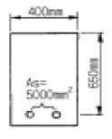
- 245.1mm
- 268.4mm
- 278.3mm
- 288.4mm
(정답률: 알수없음)
80. PS강재가 가져야 할 일반적인 성질로 틀린 것은?
- 적당한 늘임과 인성이 클 것
- 피로에 대한 저항성이 클 것
- 직선성을 유지 할 것
- 항복비가 작을 것
(정답률: 알수없음)
5과목: 토질 및 기초
81. 말뚝의 지지력을 결정하기 위해 엔지니어링 뉴스(Engineering-News)공식을 사용할 때 안전율을 얼마 정도로 적용하는가?
- 1
- 2
- 3
- 6
(정답률: 알수없음)
82. 다짐 에너지(Ec)에 관한 다음 사항중 옳지 않은 것은?
- Ec 는 낙하고에 비례한다.
- Ec 는 램머의 중량에 비례한다.
- Ec 는 다짐시료 용적에 비례한다.
- Ec 는 다짐 층수에 비례한다.
(정답률: 알수없음)
83. 조립토의 투수계수는 일반적으로 그 흙의 유효입경과 어떠한 관계가 있는가?
- 제곱에 비례한다.
- 제곱에 반비례한다.
- 3제곱에 비례한다.
- 3제곱에 반비례한다.
(정답률: 알수없음)
84. 그림은 흙댐의 침윤선을 구하는 방법을 그린 그림이다. 다음 설명중 옳지 않은 것은?
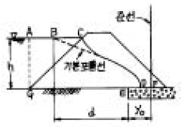
- 기본 포물선의 초점은 Ｅ이다.
- yo = Wd2+h2-d로 되는 위치에 준선이 있게 된다.
- D점은 EF의 중점이 된다.
- GC와 기본포물선은 직교한다.
(정답률: 알수없음)
85. 다음과 같은 그림에서 요소 A 에 작용하는 연직 유효 응력 ℓ￡v는? (단, 포화단위중량 γsat = 1.9 t/m3 이다.)
- ℓ￡= 3.6 t/m2
- ℓ￡= 0.9 t/m2
- ℓ￡= 1.8 t/m2
- ℓ￡= 6.8 t/m2
(정답률: 알수없음)
86. 지표면이 수평이고 옹벽의 뒷면과 흙과의 마찰각이 0°인 연직옹벽에서 Coulomb의 토압과 Rankine의 토압은?
- Coulomb의 토압은 항상 Rankine의 토압보다 크다.
- Coulomb의 토압은 Rankine의 토압보다 클 때도 있고 작을 때도 있다.
- Coulomb의 토압과 Rankine의 토압은 같다.
- Coulomb의 토압은 항상 Rankine의 토압보다 작다.
(정답률: 알수없음)
87. 일반적으로 흐트러진 흙은 자연상태의 흙에 비하여 다음과 같은 특징이 있다. 이 중 옳지 않은 것은?
- 전단강도가 작다.
- 밀도가 작다.
- 압축성이 작다.
- 압축지수가 작다.
(정답률: 알수없음)
88. 입도시험 결과 균등계수가 6이고 입자가 둥근 모래흙의 강도시험 결과 내부마찰각이 32°이었다. 이 모래지반의 N치는 대략 얼마나 되겠는가? (단, Dunham식 사용)
- 12
- 18
- 24
- 30
(정답률: 알수없음)
89. 단위체적중량이 1.6t/m3 인 연약점토(φ=0)지반에서 연직으로 2m 까지 절취할 수 있다고 한다. 이때 이 점토지반의 점착력은?
- 0.4t/m2
- 0.8t/m2
- 1.6t/m2
- 1.72t/m2
(정답률: 알수없음)
90. Terzaghi의 지지력 공식에서 고려되지 않는 것은?
- 흙의 내부 마찰각
- 기초의 근입깊이
- 압밀량
- 기초의 폭
(정답률: 알수없음)
91. 다음 중 정적인 사운딩(Sounding)이 아닌 것은?
- 표준관입 시험
- 이스키메타
- 베인 시험기
- 화란식 원추관입 시험기
(정답률: 알수없음)
92. 점착력 C가 0.7kg/cm2인 점토시료를 일축압축강도 시험을 한 결과 일축압축강도(qu) 1.67kg/cm2를 얻었다. 이 흙의 강도정수 φ를 구하면?
- 4°
- 6°
- 8°
- 10°
(정답률: 알수없음)
93. 어떤 흙의 자연함수비가 그 흙의 수축한계보다 낮다면 그 흙은 다음 중 어느 상태에 있는가?
- 액체상태
- 소성상태
- 반고체상태
- 고체상태
(정답률: 알수없음)
94. 말뚝을 지지상태에 의하여 분류한 다음 내용 중 틀린 것은?
- 다짐 말뚝
- 마찰 말뚝
- pedestal 말뚝
- 선단지지 말뚝
(정답률: 알수없음)
95. 도로의 평판재하 시험에서 1.25mm 침하량에 해당하는 하중 강도가 2.50㎏/㎝2일 때 지지력계수(K)는?
- 20㎏/㎝3
- 30㎏/㎝3
- 25㎏/㎝3
- 35㎏/㎝3
(정답률: 알수없음)
96. 직경 2㎜의 유리관을 온도 15℃의 정수중에 넣었을 때 모관상승고는 얼마인가? (단, 물과 유리관의 접촉각은 9°, 표면장력은 0.075g/㎝이다.)
- 0.15㎝
- 1.48㎝
- 1.58㎝
- 1.68㎝
(정답률: 알수없음)
97. 흙의 삼상(三相)에서 흙입자인 고체부분만의 체적을“1”로 가정한다면 공기부분만이 차지하는 체적은 다음 중 어느 것인가 ? (단, 포화도 S 및 간극률 n은 %이다.)
(정답률: 알수없음)
98. 흙을 다졌을 때 소요건조단위 중량을 얻을 수 없었다면 그 원인으로 볼수 없는 것은?
- 로울러의 중량 및 통과회수 부족
- 자연 함수비가 최적 함수비와 많이 다름
- 흙의 입도분포가 좋지 않음
- 흙의 상대밀도가 작음
(정답률: 알수없음)
99. 어떤 점토의 압밀 시험에서 압밀계수 Cv=2.0 x 10-3㎝2/sec라면 두께 2㎝인 공시체가 압밀도 90%에 소요되는 시간은? (단, 양면배수 조건임)
- 5.02분
- 7.07분
- 9.02분
- 14.07분
(정답률: 알수없음)
100. 접지압의 분포가 기초의 중앙부분에 최대응력이 발생하는 기초형식과 지반은 어느 것인가?
- 연성기초이고 점성지반
- 연성기초이고 사질지반
- 강성기초이고 점성지반
- 강성기초이고 사질지반
(정답률: 알수없음)
6과목: 상하수도공학
101. 염소살균의 장점이 아닌 것은?
- 살균력이 뛰어나다.
- 설비 및 주입방법이 비교적 간단하다.
- THMs의 생성을 방지할 수 있다.
- 비용이 비교적 저렴하다.
(정답률: 알수없음)
102. 하수관거의 관정부식(crown corrosion)의 주된 원인물질은 어느 것인가?
- N 화합물
- S 화합물
- Ca 화합물
- Fe 화합물
(정답률: 알수없음)
103. 하수관중 가장 부식되기 쉬운 곳은 어느 부분인가?
- 관정부(管頂部)
- 바닥부분
- 양편의 벽쪽
- 하수관 전체
(정답률: 알수없음)
104. 하수도 계획의 목표년도로 가장 합당한 것은?
- 5년
- 10년
- 20년
- 30년
(정답률: 알수없음)
1⑤. 살수여상(Tricking filter)에 의한 하수처리의 원리는?
- 하수내의 고형물이 산소와 결합하여 침전물을 형성한다
- 쇄석내의 재질에 의해 BOD가 여과된다
- 하수내의 고형물이 쇄석에 의해 흡수된다
- 쇄석 표면에 번식하는 미생물이 하수와 접촉하여 고형물을 섭취 분해한다
(정답률: 알수없음)
106. 결합형 잔류염소(chloramine)가 아닌 것은?
- NCl3
- NHCl2
- NOCl
- NH2Cl
(정답률: 알수없음)
107. 전염소처리의 목적과 가장 거리가 먼 것은?
- 세균을 제거한다.
- 암모니아성 질소를 제거한다.
- 철, 망간 등을 제거한다.
- 수중의 불순물을 침전시킨다.
(정답률: 알수없음)
108. 명반(Alum)을 사용하여 상수를 침전 처리하는 경우 약품주입 후 응집조에서 완속교반을 하는 이유는?
- 명반을 용해시키기 위하여
- 플록(floc)의 크기를 증가시키기 위하여
- 플록이 잘 부서지도록 하기 위하여
- 플록을 공기와 접촉시키기 위하여
(정답률: 알수없음)
109. K2Cr2O7은 강력한 산화제로서 COD 측정에 이용된다. 수질검사에서 K2Cr2O7의 소비량이 많다는 것은 무엇을 의미하는가?
- 물의 경도가 높다.
- 부유물이 많다.
- 대장균이 많다.
- 유기물이 많다.
(정답률: 알수없음)
110. 합류식 관거에서의 계획유량으로 옳은 것은?
- 계획시간 최대오수량
- 계획오수량
- 계획평균오수량
- 계획시간 최대오수량 + 계획우수량
(정답률: 알수없음)
111. 깊이 3m, 길이 24m, 폭 10m인 장방형 약품침전지에서 침강속도 1.5m/hr 이상인 입자는 100% 제거되도록 설계 하였다면 이 침전지의 처리 수량은 얼마인가? (단, 침전지는 이상적으로 운전된다고 가정한다.)
- 240m3/hr
- 360m3/hr
- 400m3/hr
- 480m3/hr
(정답률: 알수없음)
112. 우수조정지의 설치장소로서 적당하지 않는 곳은?
- 하류관거의 유하능력이 부족한 곳
- 하류지역의 펌프장 능력이 부족한 곳
- 방류수로의 유하능력이 부족한 곳
- 지형이 경사가 완만하다 급하게 변하는 곳
(정답률: 알수없음)
113. 하천 표류수를 수원으로 할 때 기준으로 해야 할 하천수량은 다음 중 어느 것인가?
- 갈수량
- 평수량
- 홍수량
- 최대 홍수량
(정답률: 알수없음)
114. 상수를 처리한 후에 치아의 충치를 예방하기 위해 주입되는 물질은?
- 염소
- 불소
- 산소
- 비소
(정답률: 알수없음)
115. 상수도의 급수계통으로 알맞은 것은?
- 취수 - 도수 - 정수 - 배수 - 송수 - 급수
- 취수 - 도수 - 송수 - 정수 - 배수 - 급수
- 취수 - 송수 - 정수 - 배수 - 도수 - 급수
- 취수 - 도수 - 정수 - 송수 - 배수 - 급수
(정답률: 알수없음)
116. 토출량이 6m3/min, 흡입구 유속이 2m/sec 일 때 흡입구의 구경은 약 얼마인가?
- 85mm
- 142mm
- 426mm
- 253mm
(정답률: 알수없음)
117. 다음 중 상수도의 수원으로서 가장 널리 이용되는 것은?
- 천층수
- 하천수
- 호수 및 저수지
- 복류수
(정답률: 알수없음)
118. 1970년의 인구가 52,000명, 1990년의 인구가 70,000명일 때 등차급수법으로 2010년 인구를 추정하면?
- 70,000명
- 83,000명
- 85,000명
- 88,000명
(정답률: 알수없음)
119. 활성슬러지법으로 하수를 처리한 결과 BOD5 제거 반응이 1차반응(밑수=10)을 따르며, 90%의 BOD5 제거에 5시간이 소요되었다. 반응속도상수 K는 얼마인가?
- 0.3 hr-1
- 0.6 hr-1
- 0.1 hr-1
- 0.2 hr-1
(정답률: 알수없음)
120. 우수관의 길이 1,500m인 하수관 내에서 우수가 1.2m/sec의 속도로 흐르고 있다. 유달시간은? (단, 유입시간은 7분임)
- 7분
- 14분
- 21분
- 28분
(정답률: 알수없음)